|
4-2-3-1
|
Spain | 3 | - | 0 | Austria |
4-2-3-1
|
| HT 1-0 | ||||||
|
FIFA World CupThursday 2 July 2026
|
||||||
- Venue
- Los Angeles Stadium
- Attendance
- 70,492
- Referee
- Glenn Nyberg
Goal36'
Mikel Oyarzabal
Assist: Marc Cucurella
Goal66'
Pedro Porro
Assist: Álex Baena
- 2
Substitution71'
Álex Baena
Ferran Torres
Dani Olmo
Mikel Merino
Substitution85'
Lamine Yamal
Gavi
Goal89'
Mikel Oyarzabal
Assist: Marc Cucurella
- 2
Substitution90+3'
Pedri
Fabián Ruiz
Aymeric Laporte
Marc Pubill
Whistle45+5'
45+5'
- 2
Substitution46'
X. Schlager
F. Grillitsch
N. Seiwald
C. Chukwuemeka
- 2
Substitution60'
R. Schmid
S. Kalajdžić
M. Gregoritsch
M. Arnautović
Yellow card83'
S. Posch
Substitution85'
S. Posch
A. Prass
Spain | |
|---|---|
Goalkeeper | |
| 23 | Unai Simón |
Defender | |
| 12 | Pedro Porro 66' |
| 14 | Aymeric Laporte 90+3' |
| 22 | Pau Cubarsí |
| 24 | Marc Cucurella |
Midfielder | |
| 10 | Dani Olmo 71' |
| 15 | Álex Baena 71' |
| 16 | Rodri |
| 19 | Lamine Yamal 85' |
| 20 | Pedri 90+3' |
Forward | |
| 21 | Mikel Oyarzabal 36'89' |
Substitutes | |
| 2 | Marc Pubill 90+3' |
| 6 | Mikel Merino 71' |
| 7 | Ferran Torres 71' |
| 8 | Fabián Ruiz 90+3' |
| 9 | Gavi 85' |
Austria | |
Goalkeeper | |
| 1 | A. Schlager |
Defender | |
| 3 | K. Danso |
| 5 | S. Posch 83'85' |
| 8 | D. Alaba |
| 20 | K. Laimer |
Midfielder | |
| 4 | X. Schlager 46' |
| 6 | N. Seiwald 46' |
| 9 | M. Sabitzer |
| 18 | R. Schmid 60' |
| 24 | P. Wanner |
Forward | |
| 11 | M. Gregoritsch 60' |
Substitutes | |
| 7 | M. Arnautović 60' |
| 10 | F. Grillitsch 46' |
| 14 | S. Kalajdžić 60' |
| 17 | C. Chukwuemeka 46' |
| 22 | A. Prass 85' |


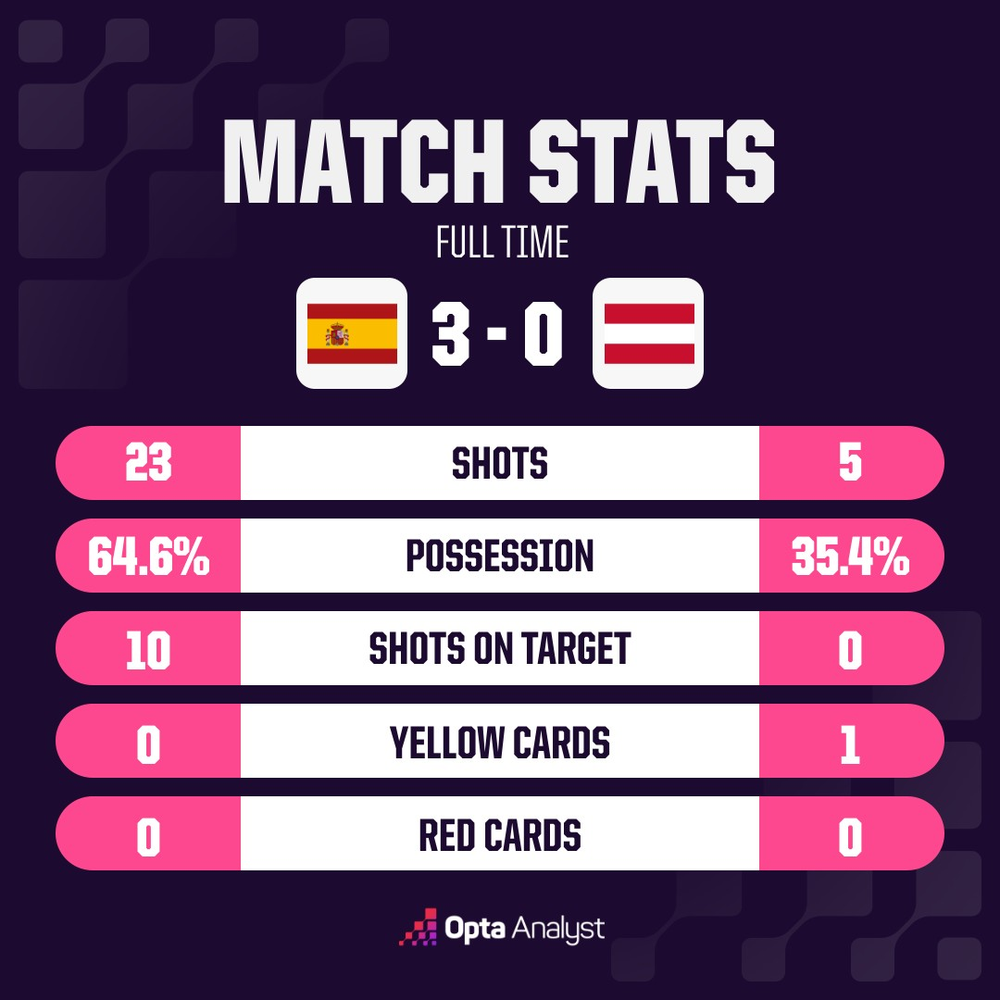
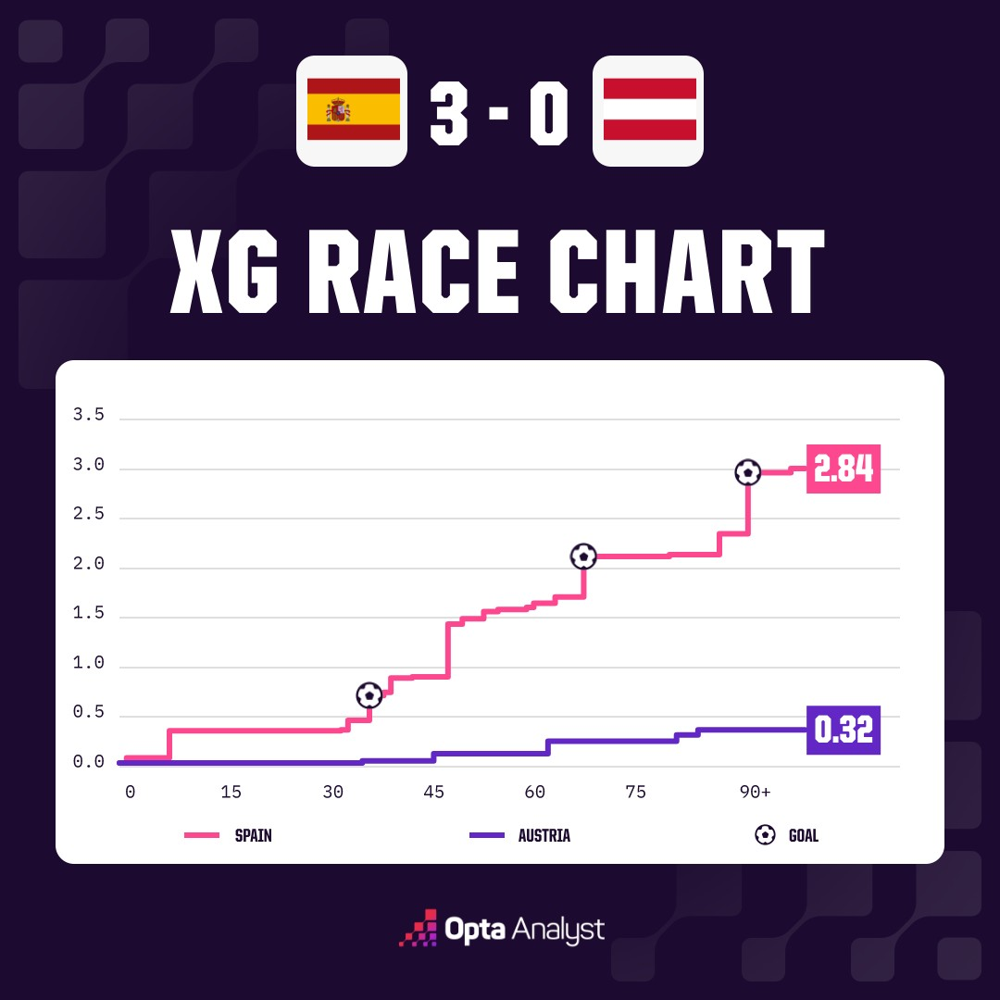
97'
Spain have won their last 3 games in the FIFA World Cup, their last longer winning streak was from 21st June 2010 to 11th July 2010, a run of 6 games.
97'
Austria have failed to win in their last 3 games in the FIFA World Cup, their last joint longest winless streak was from 11th June 1998 to 23rd June 1998.
97'
Spain have kept a clean sheet in each of their last 5 games in the FIFA World Cup, a run of 595 minutes without conceding a goal.
90+7'
That's it! The referee blows the whistle and we have reached full-time. The final score at Los Angeles Stadium is Spain 3-0 Austria.
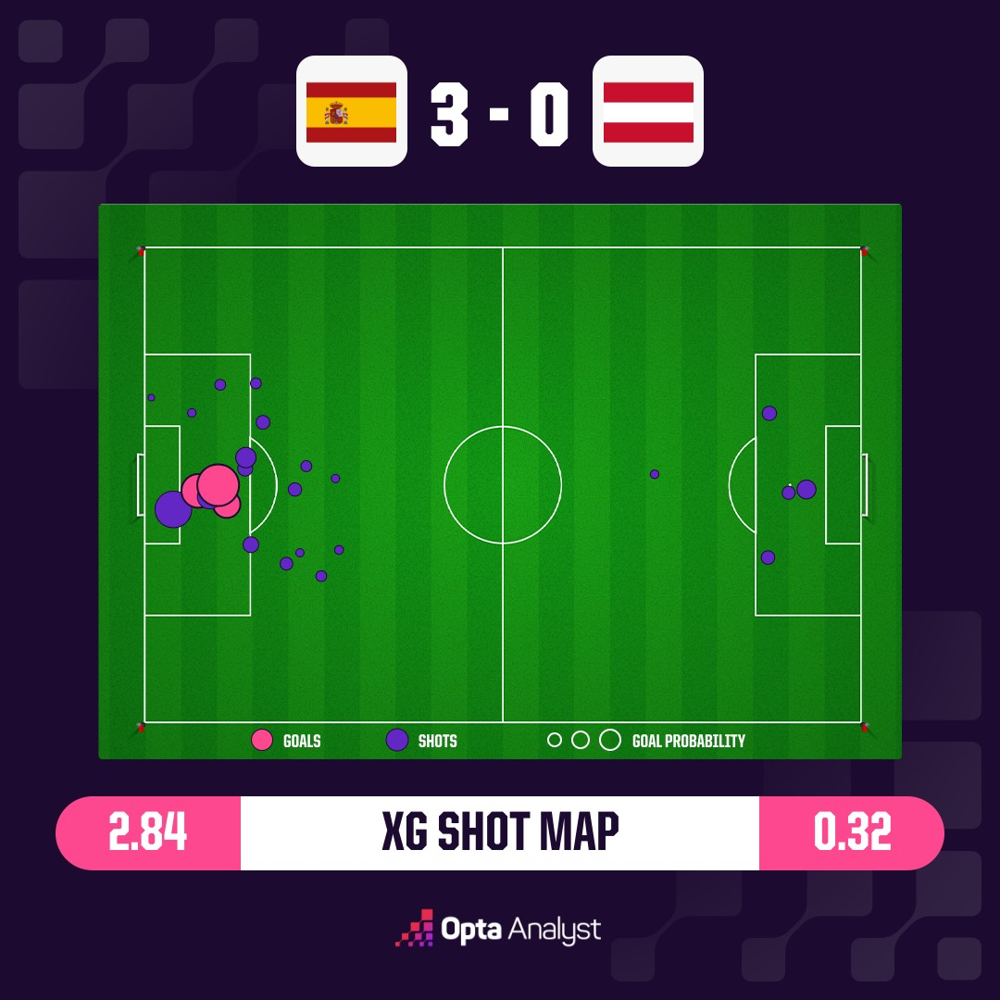
90+5'
That is a disappointing effort from Ferran Torres, who went for glory but got their attempt wrong, and the shot sailed off target. A frustrating moment for Spain.
90+4'
A free-kick to Spain, as Konrad Laimer goes in and fouls Gavi. However, Austria will not mind giving one away in this area too much, with plenty of distance to their goal.
90+3'
A substitution for Spain sees Aymeric Laporte replaced by Marc Pubill. There does not appear to be any obvious sign of an injury, so that is a tactical switch.
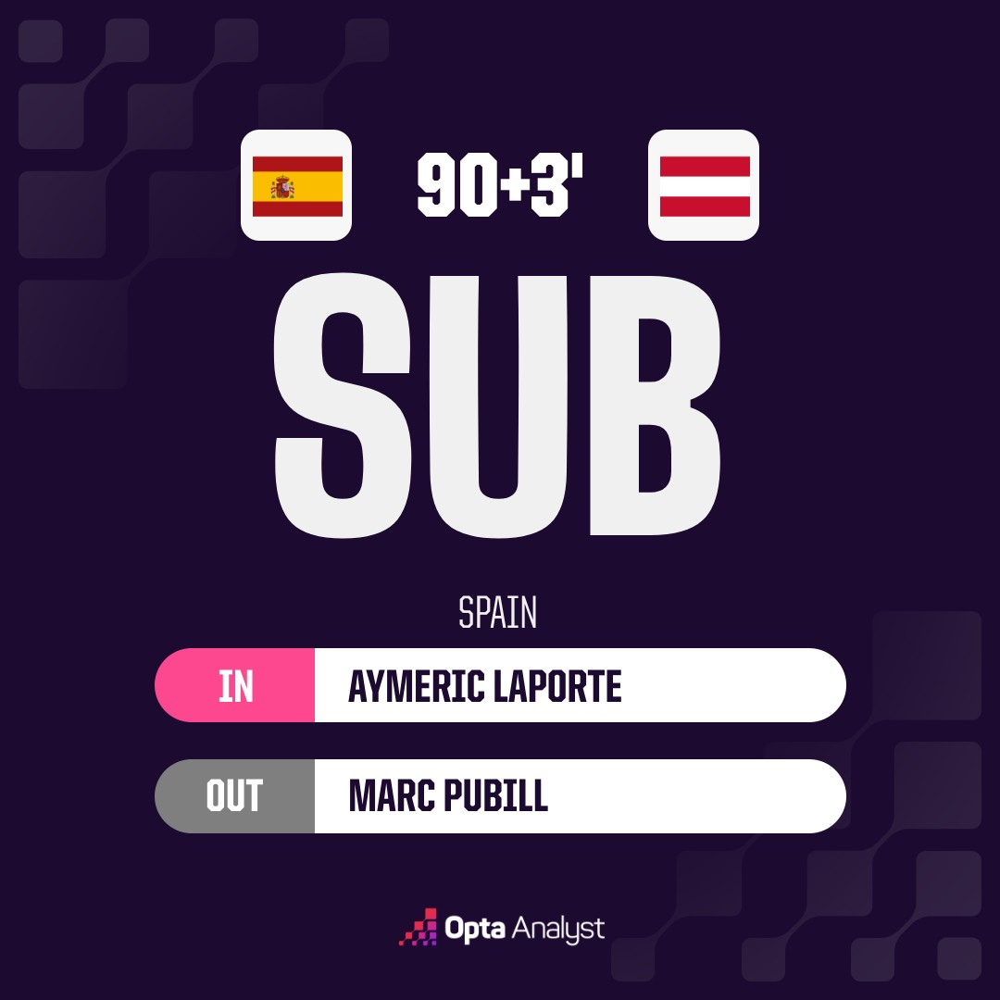
90+3'
A substitution for Spain sees Pedri replaced by Fabián Ruiz. There does not appear to be any obvious sign of an injury, so that is a tactical switch.
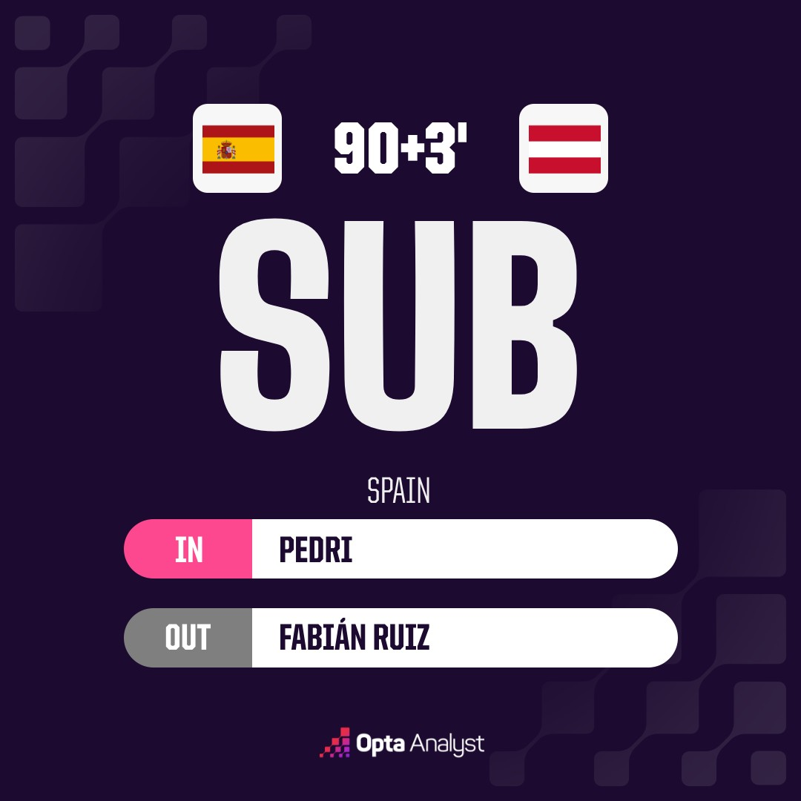
90+2'
Florian Grillitsch goes in on Pedri and concedes a foul. The free-kick is not in a particularly dangerous area from Austria’s viewpoint, though.
89'
Marc Cucurella has assisted his second goal in the 2026 FIFA World Cup.
89'
Spain have scored 3 goals in the FIFA World Cup game for the first time since 21st June 2026 against Saudi Arabia (W4-0).
89'
Mikel Oyarzabal has scored his fourth goal of the 2025 FIFA World Cup this edition, more than any other Spain player.
89'
Is that game over? Spain are now well ahead, having extended their lead to 3 goals thanks to Mikel Oyarzabal’s effort. It’s now 3-0, and Austria face an uphill battle to get back into it.
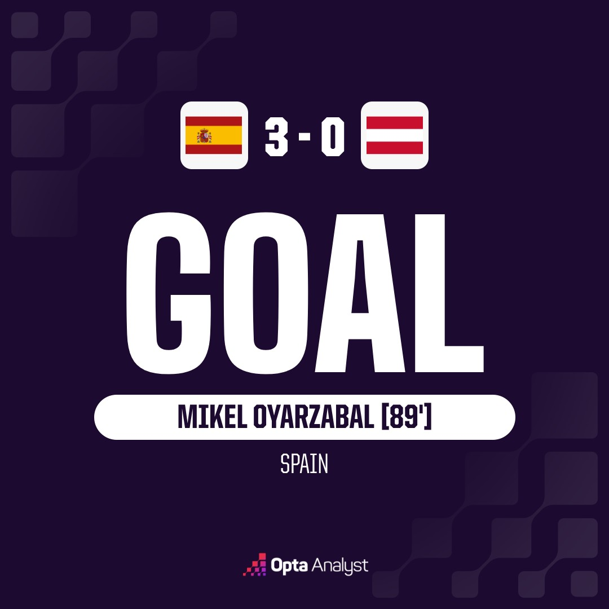
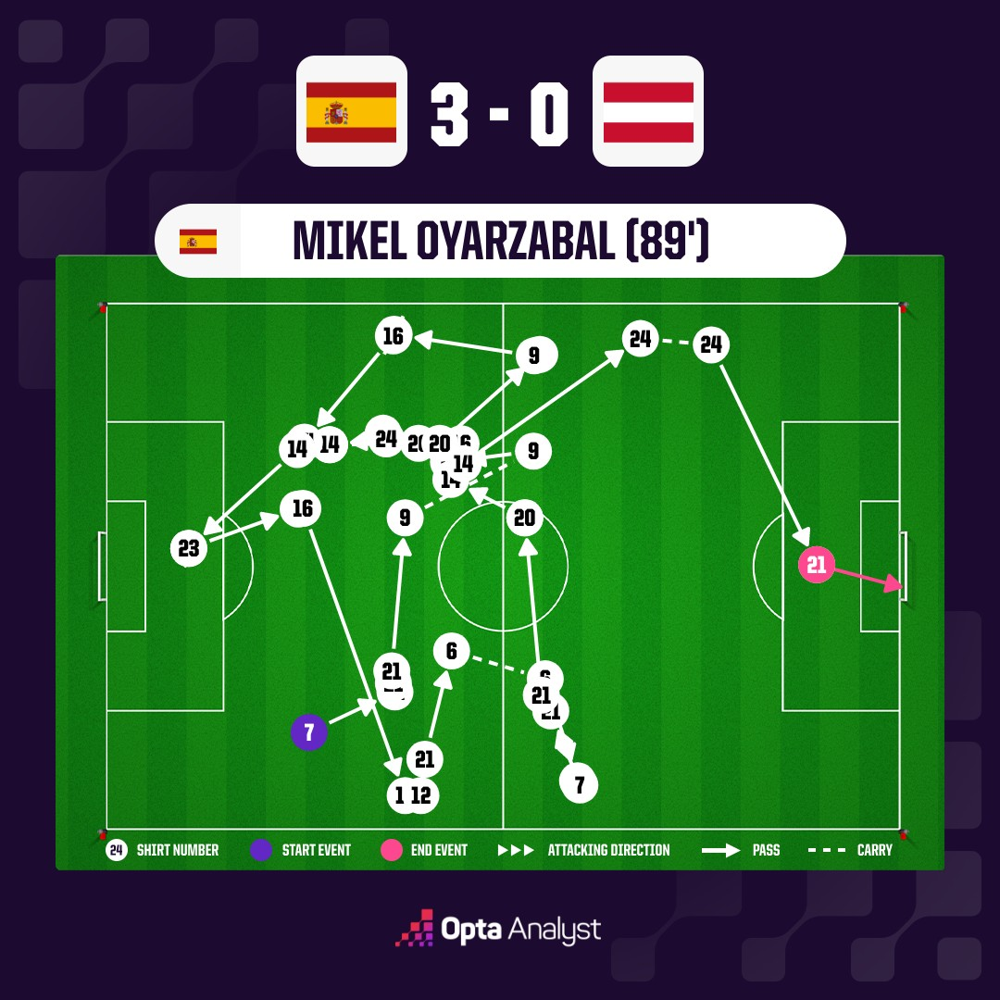
87'
No luck – it’s offside! Marko Arnautović looked to dart in behind and get on the end of a pass, yet they just went too early, and the flag is up to signal offside.
86'
The Spain defence steps up in time and there is a frustration for Marko Arnautović, who thought they were through until the flag goes up to signal offside.
85'
The Austria manager is looking to the substitutes’ bench, bringing on Alexander Prass in place of Stefan Posch. Will the change make a difference? Let’s find out!
85'
The Spain manager is looking to the substitutes’ bench, bringing on Gavi in place of Lamine Yamal. Will the change make a difference? Let’s find out!
85'
Mikel Oyarzabal goes in on Kevin Danso and concedes a foul. The free-kick is not in a particularly dangerous area from Spain’s viewpoint, though.
85'
OFF THE LINE! That is fantastic defending from David Alaba, who is well placed to make a vital intervention and clear Lamine Yamal’s attempt off the line.
83'
The referee goes to their pocket and pulls out a yellow card, which is brandished in the direction of Stefan Posch. Will they be able to avoid a second booking?
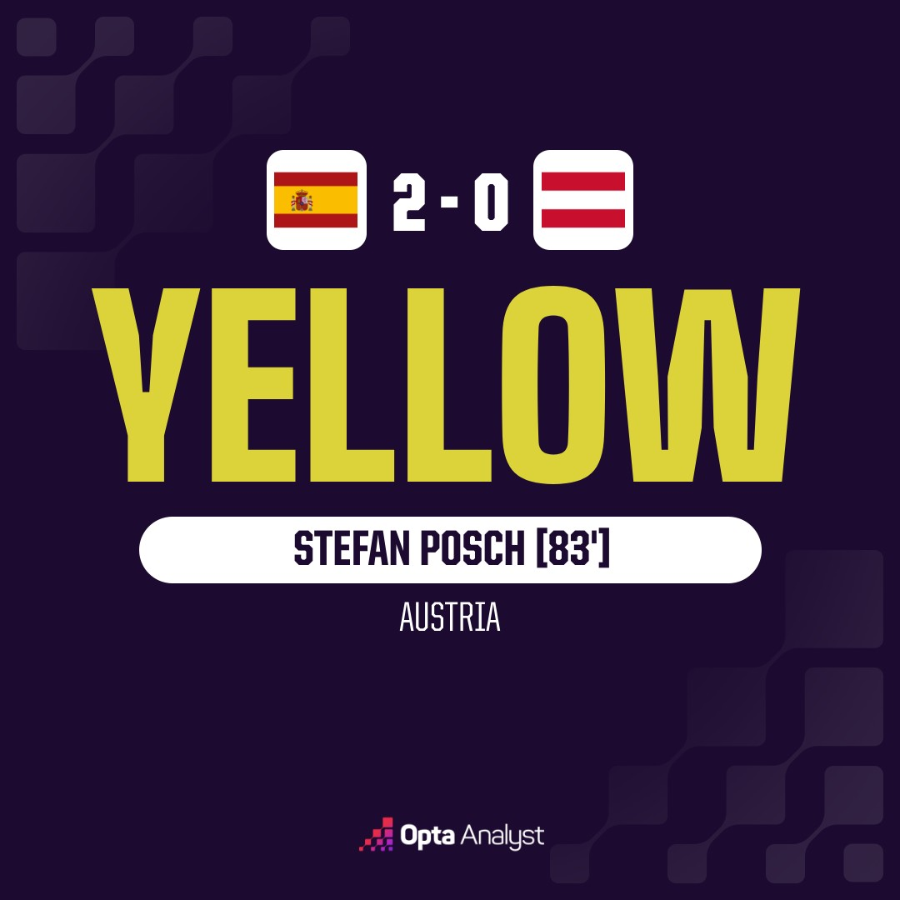
83'
Stefan Posch goes in on Marc Cucurella and concedes a foul. The free-kick is not in a particularly dangerous area from Austria’s viewpoint, though.
83'
It's all hands on deck for Spain as they defend their lead, making a wave of critical blocks and clearances
82'
MISS! A shot from Stefan Posch ends up being off target. They might have done a bit better with that one, but it remains Austria 0-2 Spain.
81'
A free-kick to Austria, as Mikel Merino goes in and fouls Florian Grillitsch. However, Spain will not mind giving one away in this area too much, with plenty of distance to their goal.
81'
Austria have not had a shot on target so far in this game.
79'
MISS! A shot from Carney Chukwuemeka ends up being off target. They might have done a bit better with that one, but it remains Austria 0-2 Spain.
78'
MISS! A shot from Ferran Torres ends up being off target. They might have done a bit better with that one, but it remains Spain 2-0 Austria.
76'
With 15 minutes of normal time remaining, it is Spain who have had more of the ball, with 67.05% compared to Austria’s 32.95%.
76'
Not much goalmouth action to speak of in this period of the game, with no attempts made from either side. This game could spark at any moment, however. It is Spain who have had more of the ball, controlling 69 per cent possession in the last 10 minutes.
75'
A foul from Marc Cucurella on Carney Chukwuemeka sees Austria win a free-kick, but it is not in a dangerous position, so Spain should be confident they can defend it easily enough.
74'
Still behind, but Austria are refusing to roll over - defensive urgency rising as they fend off more pressure and push for a late turnaround.
74'
A rash challenge from Marko Arnautović, who sends Rodri tumbling, giving Spain a free-kick. It is not in a threatening position, but it gives them a chance to get back on the ball.
72'
Konrad Laimer goes in on Mikel Merino and concedes a foul. The free-kick is not in a particularly dangerous area from Austria’s viewpoint, though.
71'
Spain are making a tactical change. Dani Olmo is leaving the field and in their place comes Mikel Merino – we will soon see if this switch has the desired impact.
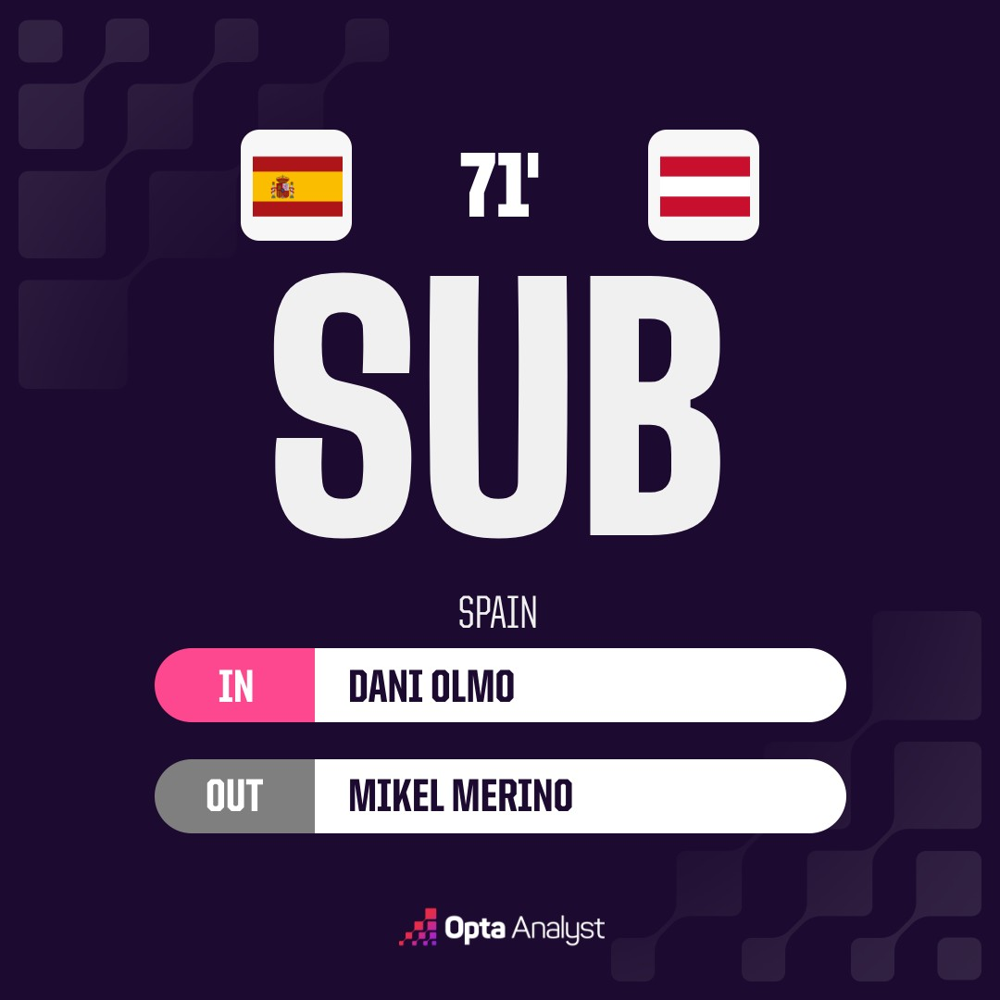
71'
Álex Baena’s match is over as Spain decide to make a substitution. Ferran Torres enters the field in what looks like a tactical change.
68'
Free-kick! A foul from Sasa Kalajdžić on Aymeric Laporte. It is well away from Austria’s goal, so it is unlikely to result in a chance for Spain.
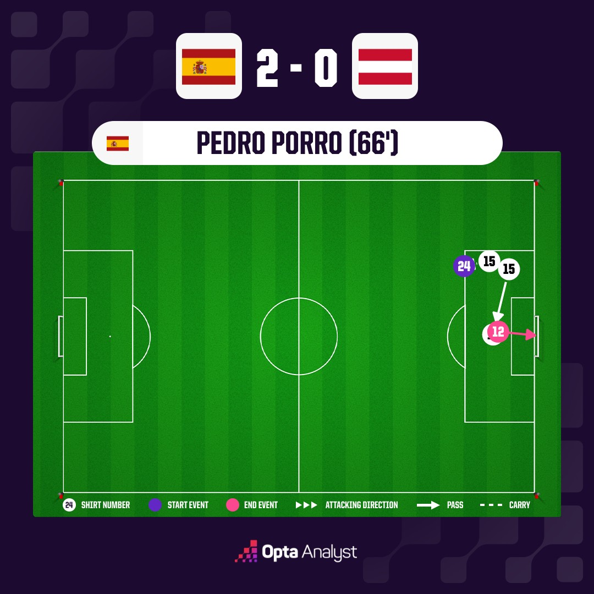
66'
Álex Baena has assisted his first goal in the 2026 FIFA World Cup.
66'
Pedro Porro has scored his first goal in the 2026 FIFA World Cup.
66'
GOAL! Spain have extended their lead! It's Pedro Porro who has got the goal, and Austria are now two goals behind, with Spain now in a strong position to record a victory.
66'
That might have been going in! A fantastic block from Florian Grillitsch, who gets in the way of a goal-bound effort from Dani Olmo. Would the goalkeeper have been beaten? We will never know.
66'
This match is into the last 25 minutes now, and before it goes into the final stages, let’s check on the shots. There have been 20 in total – 17 from Spain, and 3 from Austria. Of those attempts, 7 have hit the target – 7 from Spain and 0 from Austria.
63'
Marko Arnautović goes in on Unai Simón and concedes a foul. The free-kick is not in a particularly dangerous area from Austria’s viewpoint, though.
62'
The Austria defence steps up in time and there is a frustration for Lamine Yamal, who thought they were through until the flag goes up to signal offside.
62'
BLOCKED! That was close. Dani Olmo got off a shot, which was heading in, but Florian Grillitsch was on hand to make a vital intervention. Great block!
61'
MISS! How has that not gone in? A complete lack of composure shown from Sasa Kalajdžić, who squanders a golden chance for Austria, whose coach looks on frustrated from the touchline. A real let off for Spain!
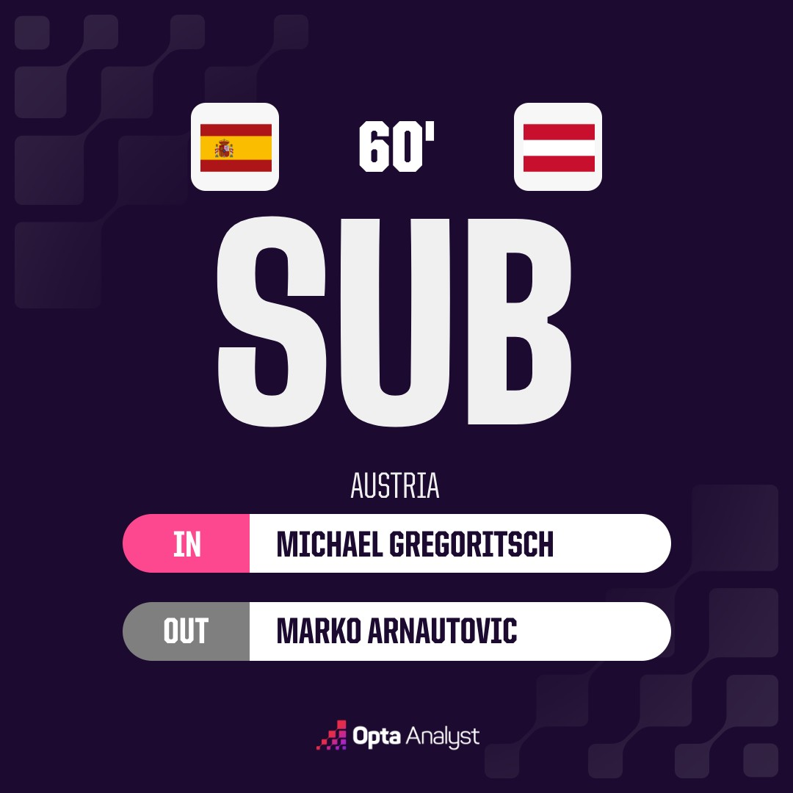
60'
A substitution for Austria sees Michael Gregoritsch replaced by Marko Arnautović. There does not appear to be any obvious sign of an injury, so that is a tactical switch.
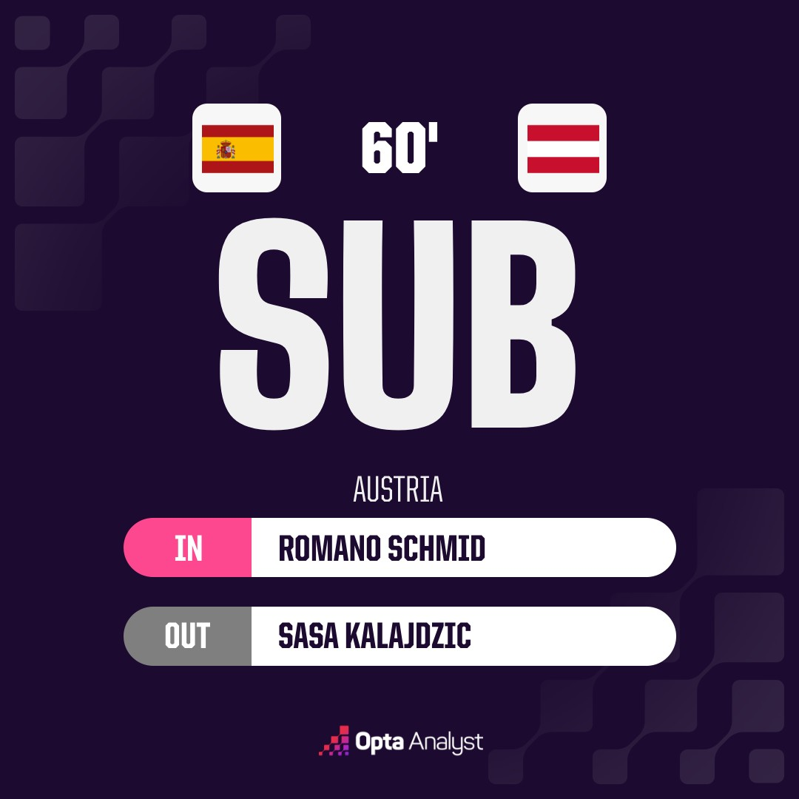
60'
Austria are making a tactical change. Romano Schmid is leaving the field and in their place comes Sasa Kalajdžić – we will soon see if this switch has the desired impact.
59'
No luck – it’s offside! Marcel Sabitzer looked to dart in behind and get on the end of a pass, yet they just went too early, and the flag is up to signal offside.
59'
BLOCK! An intervention from Konrad Laimer might have just prevented a goal, with the defending player getting in the way of an attempt from Lamine Yamal. Solid defending there!
59'
Lamine Yamal has attempted 5 shots, the first time he has attempted at least 5 shots in a match in the FIFA World Cup since facing Saudi Arabia on 21st June 2026 (5 shots).
58'
Great block from Paul Wanner, as they get in the way of an attempt from Álex Baena that might have been set to cause the goalkeeper some problems. Solid defending from the Austria player.
55'
A rash challenge from Stefan Posch, who sends Álex Baena tumbling, giving Spain a free-kick. It is not in a threatening position, but it gives them a chance to get back on the ball.
55'
Despite trailing, Austria are showing real defensive grit, digging in and stopping further damage as they try to build a platform.
54'
CORNER! The pressure is building for Spain as they win a set-piece after Rodri's attempt is blocked by Florian Grillitsch and diverted out of play.
52'
Mikel Oyarzabal has attempted 5 shots, the first time he has attempted at least 5 shots in a match in the FIFA World Cup since facing Saudi Arabia on 21st June 2026 (5 shots).
52'
That is a disappointing effort from Mikel Oyarzabal, who went for glory but got their attempt wrong, and the shot sailed off target. A frustrating moment for Spain.
52'
In the last 15 minutes, it is Spain who have dominated the ball, having seen 71.14% of the possession, yet they have not been able to go and turn that into a goal just yet, with their opponents standing firm.
49'
SAVE! A shot from outside the box by Spain Mikel Oyarzabal was heading in, but Austria Alexander Schlager keeps it out with a smart stop.
49'
Free-kick! A foul from Lamine Yamal on Marcel Sabitzer. It is well away from Spain’s goal, so it is unlikely to result in a chance for Austria.
48'
Good play from Pedro Porro, who draws a foul from Carney Chukwuemeka to hand Spain a free-kick in a dangerous position. Will they create something from this set-piece?
47'
A foul from Paul Wanner on Marc Cucurella sees Spain win a free-kick, but it is not in a dangerous position, so Austria should be confident they can defend it easily enough.
46'
Nicolas Seiwald’s match is over as Austria decide to make a substitution. Carney Chukwuemeka enters the field in what looks like a tactical change.
46'
Xaver Schlager’s match is over as Austria decide to make a substitution. Florian Grillitsch enters the field in what looks like a tactical change.
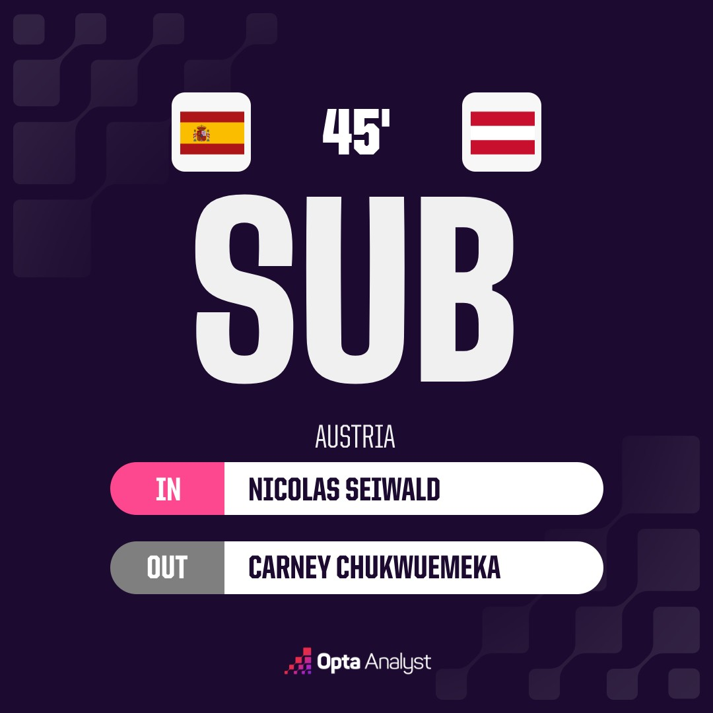
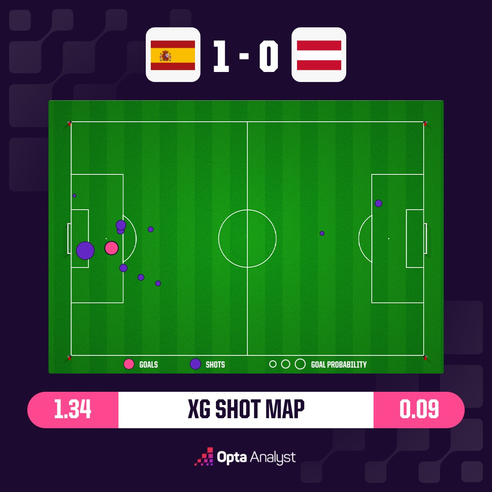
45+5'
Half-time! We reach the interval at Los Angeles Stadium and it is Spain who have a 1-0 lead over Austria. Can they hold on and see this out in the second half?
45+2'
Despite trailing, Austria are showing real defensive grit, digging in and stopping further damage as they try to build a platform.
45+2'
What a miss! That is a bad finish from Lamine Yamal, who has been unable to convert from a good opportunity, seeing a big chance for Spain to extend their lead go begging. Will Austria make them pay for that profligacy?
45+2'
Alexander Schlager has made 5 saves, his highest total in a single match in the FIFA World Cup.
45+2'
WOODWORK! A great effort from Álex Baena, but they get unlucky as the post comes to Austria rescue. A lucky escape for them, and an unfortunate moment for Spain.
45+2'
SAVE! A shot from outside the box by Spain Álex Baena was heading in, but Austria Alexander Schlager keeps it out with a smart stop.
45+1'
A free-kick in a dangerous position now for Spain, after a foul from Stefan Posch on Álex Baena. Can Spain make Austria pay for that rashness from Stefan Posch?
45+1'
Offside! Michael Gregoritsch thought they were through on goal, but the Spain defence stepped up in time to catch them offside, and the assistant referee puts their flag up.
45+1'
Great block from Pau Cubarsí, as they get in the way of an attempt from Nicolas Seiwald that might have been set to cause the goalkeeper some problems. Solid defending from the Spain player.
44'
A foul from Marcel Sabitzer on Mikel Oyarzabal sees Spain win a free-kick, but it is not in a dangerous position, so Austria should be confident they can defend it easily enough.
42'
That is a disappointing effort from Aymeric Laporte, who went for glory but got their attempt wrong, and the shot sailed off target. A frustrating moment for Spain.
41'
Austria have not had a shot on target so far in this game.
39'
That might have been going in! A fantastic block from Kevin Danso, who gets in the way of a goal-bound effort from Mikel Oyarzabal. Would the goalkeeper have been beaten? We will never know.
38'
Save! A long-range strike from Lamine Yamal was heading in, but Alexander Schlager got to it to parry it away from danger.
36'
Marc Cucurella has assisted his first goal in the 2026 FIFA World Cup.
36'
Mikel Oyarzabal has scored his third goal in the 2026 FIFA World Cup, netting for the first time since 21st June 2026 against Saudi Arabia.
36'
GOAL! The drama continues as Spain take the lead, courtesy of a goal from Mikel Oyarzabal. There is still plenty of time remaining for more potential twists and turns, but as things stand Spain are on track for victory.
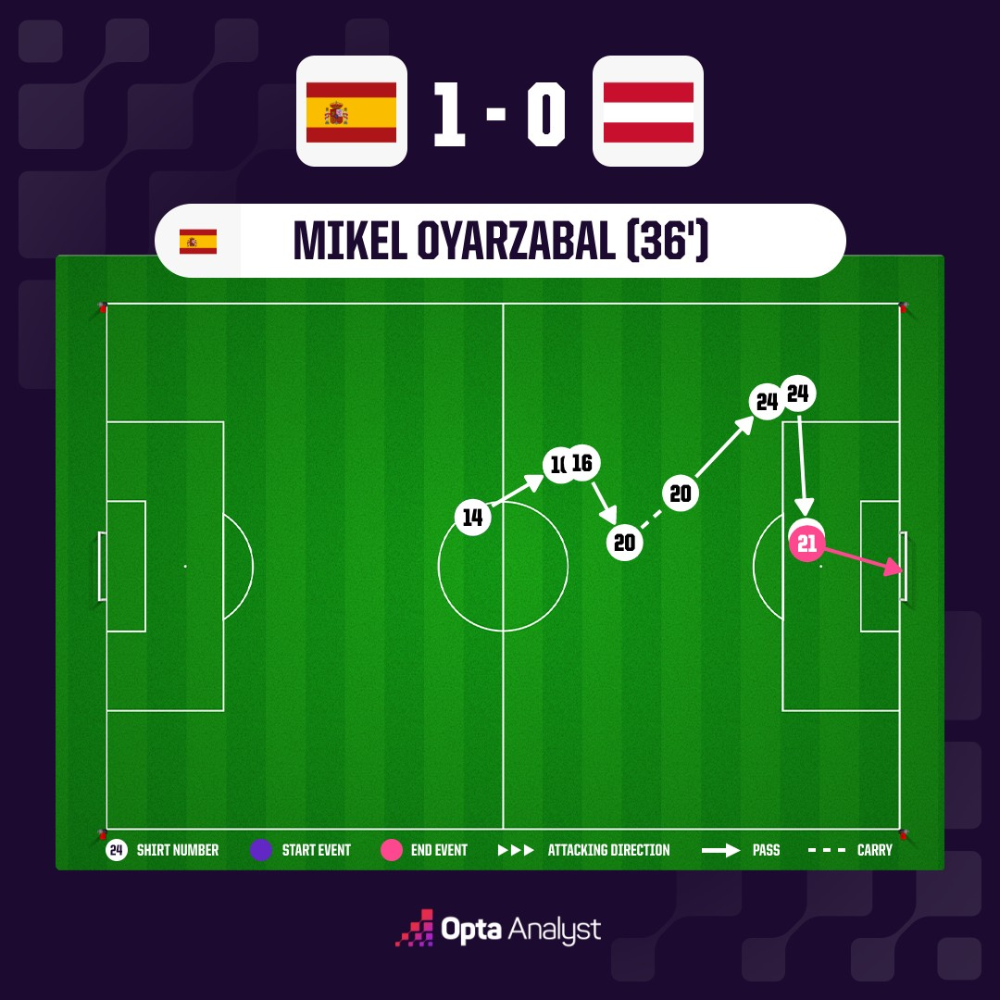
35'
No luck! David Alaba takes on a shot that, had they got it right, might have been set to test the goalkeeper, but instead it is sent off target and Spain come away unscathed.
34'
The Austria defence steps up in time and there is a frustration for Lamine Yamal, who thought they were through until the flag goes up to signal offside.
34'
Plenty of the ball in the last quarter-of-an-hour of this match for Spain, but still Austria stand firm, despite having had only 26.27% of the ball in that period. Can Spain make their possessional dominance count?
33'
Mikel Oyarzabal's effort is deflected out for a corner. Can Spain make anything of this set-piece?
32'
A chance goes begging as Lamine Yamal gets off a shot that does not hit the target. They might have done better with that one, but instead it is a goal-kick to Austria.
32'
There is plenty of possession for Spain, with 65.91% compared to Austria’s 34.09% in the last 15 minutes. However, Spain have not been able to turn that dominance of the ball into a goal or even a shot during the period – which will be a huge frustration for their coach.
29'
A free-kick to Austria, as Pau Cubarsí goes in and fouls Alexander Schlager. However, Spain will not mind giving one away in this area too much, with plenty of distance to their goal.
29'
A chance now for Spain to get a good delivery into the box, after the ball is diverted behind for a corner. Spain have been pushing for what would be a key goal, but Austria have stood firm so far.
28'
This game is certainly in a bit of a lull now, with neither team having had an attempt at goal in the past 10 minutes. It could do with something to spark it into life. Spain have had more possession during the quiet spell, but are yet to do much with it.
19'
A foul from Pedro Porro on Marcel Sabitzer sees Austria win a free-kick, but it is not in a dangerous position, so Spain should be confident they can defend it easily enough.
19'
Spain are having plenty of the ball, with 65.00% possession in the last 15 minutes. However, they have been unable to transfer that possessional dominance into a goal during that period.
18'
Not much goalmouth action to speak of in this period of the game, with no attempts made from either side. This game could spark at any moment, however. It is Spain who have had more of the ball, controlling 65 per cent possession in the last 10 minutes.
16'
A foul from Paul Wanner on Pedro Porro sees Spain win a free-kick, but it is not in a dangerous position, so Austria should be confident they can defend it easily enough.
15'
Free-kick! A foul from David Alaba on Mikel Oyarzabal. It is well away from Austria’s goal, so it is unlikely to result in a chance for Spain.
13'
A rash challenge from Marc Cucurella, who sends Stefan Posch tumbling, giving Austria a free-kick. It is not in a threatening position, but it gives them a chance to get back on the ball.
11'
A chance now for Spain to get a good delivery into the box, after the ball is diverted behind for a corner. Spain have been pushing for what would be a key goal, but Austria have stood firm so far.
11'
Foul! A free-kick now in a dangerous area for Spain, after Dani Olmo is fouled by David Alaba. Can Spain make the most of this opportunity?
9'
Decision overturned! The referee’s original call is deemed to be wrong by VAR, and after a check, it has been changed. The technology has played a major role there.
9'
Decision checked. VAR is going to look at this incident again, so this decision may well not stand. Let’s wait and see what the officials do here.
8'
A chance goes begging as Aymeric Laporte gets off a shot that does not hit the target. They might have done better with that one, but instead it is a goal-kick to Austria.
8'
Corner! Spain are pushing for a goal and now they have an opportunity from this set-piece.
6'
No luck – it’s offside! Michael Gregoritsch looked to dart in behind and get on the end of a pass, yet they just went too early, and the flag is up to signal offside.
3'
It’s been tight so far, and Spain are making sure it stays that way with strong defensive discipline and well-timed clearances.
2'
Lamine Yamal goes for goal with a strike from distance, but Alexander Schlager is able to watch it all the way and make the save. A bit of a tester, there.
1'
Up and running! Spain have kicked off and this FIFA World Cup match is now under way at Los Angeles Stadium. Let’s hope for an intriguing battle on the pitch.
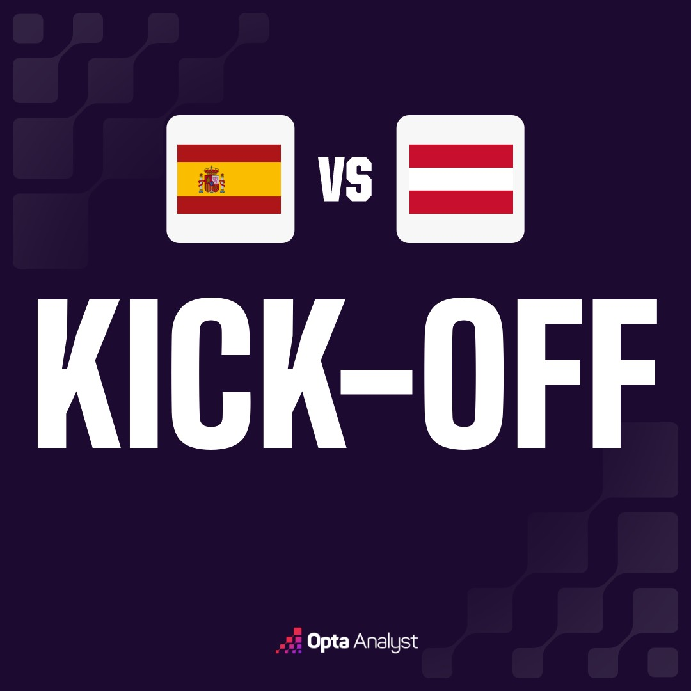
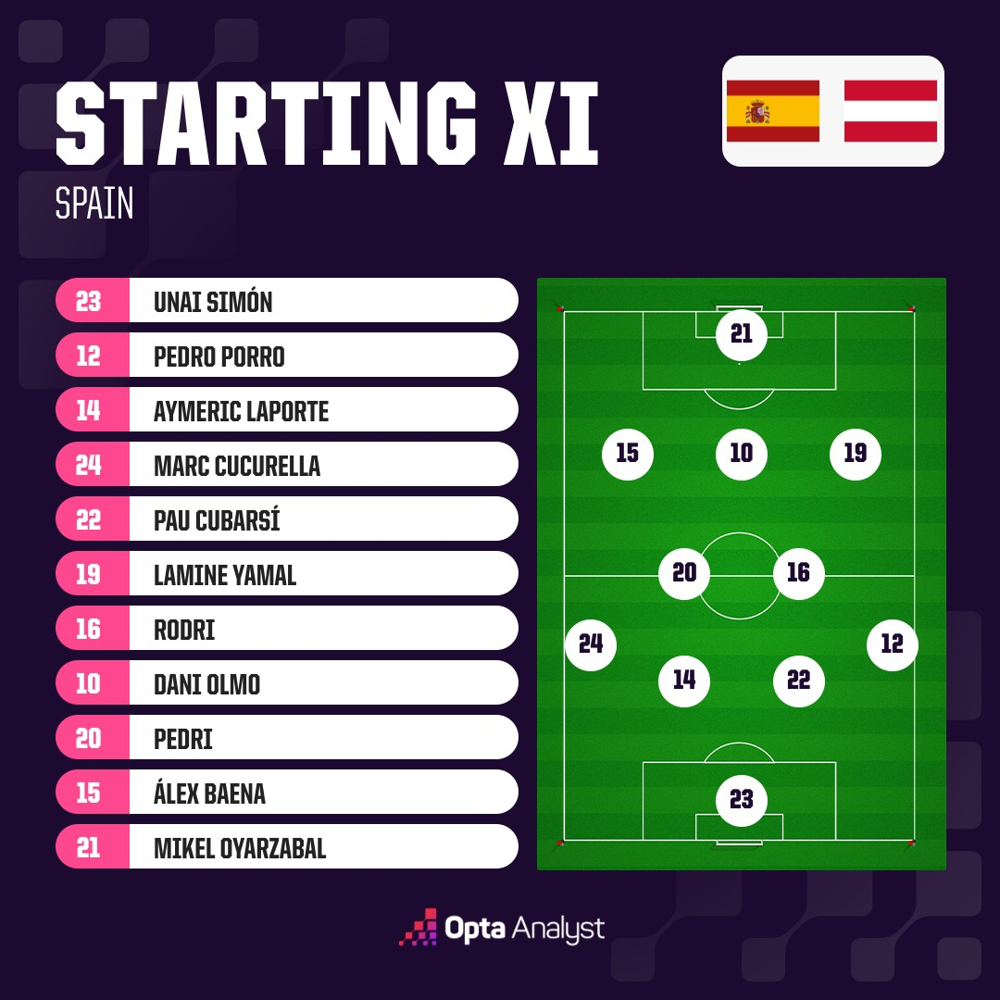
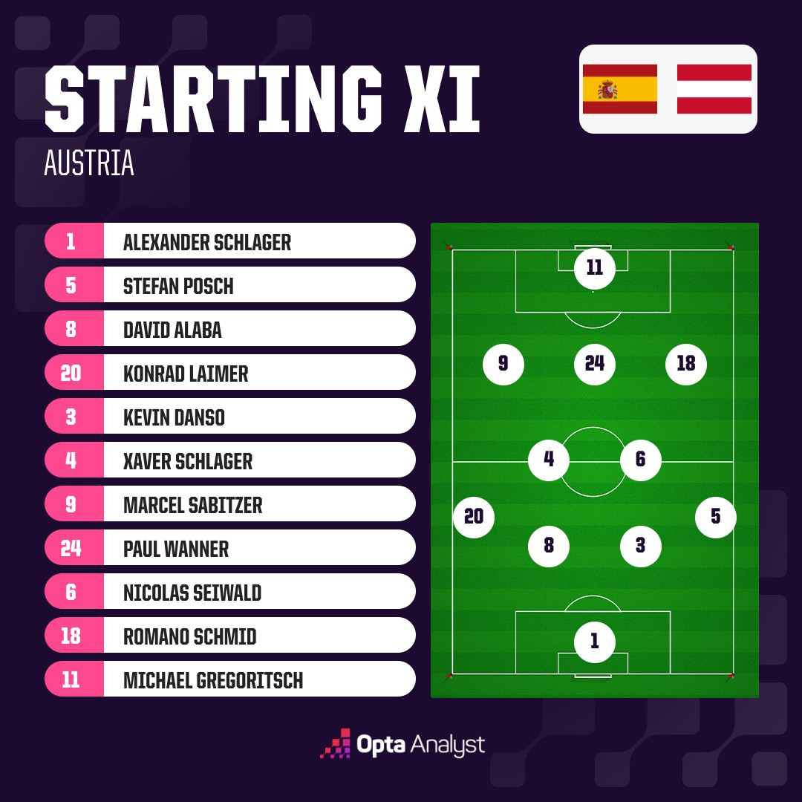
Spain have kept a clean sheet in the last 3 matches
Spain have won their last 3 games at home when Mikel Oyarzabal has scored
Spain take on Austria on Thursday for a FIFA World Cup Round of 32 clash at Los Angeles Stadium.
Spain earned a 1-0 victory over Uruguay in their last group stage match on June 26. Álex Baena was the only player on the scoresheet in the win. They are undefeated in their last 13 games in all competitions.
Austria played out a 3-3 draw against Algeria in their last game, a June 27 group stage clash at Kansas City Stadium. Marko Arnautovic, Marcel Sabitzer, and Sasa Kalajdzic netted in the draw. In 2026, they have won four, drawn one, and lost one.
Spain finished first in their group on seven points, while Austria's four points placed them second.
The previous encounter between the teams saw Spain emerge victorious 5-1 in November 2009.
Spain have been led by Mikel Oyarzabal in World Cup play. The striker leads the team with two goals. Austria's most productive player in attack has been Arnautovic, who has scored twice in this World Cup campaign, including one match-opening goal.
The Spanish side have been difficult to score on in World Cup play, as they haven't allowed a goal in the competition this season
In their last six matches in all competitions, Spain have won three and drawn three. The Spanish side scored nine and conceded two in that period, scoring first in four of the six contests. A majority of their goals (seven) came in the first half, while their opponents netted once in the first 45 minutes. The Austrian side have won four, drawn one and lost one in their last six. The Austrian side scored 13 and conceded seven over that stretch, netting first in five of the six. They had three goals in the first half, while their opponents netted two times before the break.
-
General
Possession 64.4% 64.43335.56735.6% Possession lost in defensive half 17 174343 Possession lost in middle third 46 464848 Duels 86 868383 Duels success rate 61.6% 61.62836.14536.1% Aerial duels 15 151515 Aerial duels won 80.0% 802020.0% Successful dribbles 7 755 Fouls won 15 1588 Offsides 2 255 Corner awarded 9 900 -
Distribution
Passes 629 629347347 Long passes 35 353737 Long passes proportion (%) 5.6% 5.56410.66310.7% Passing accuracy 90.6% 90.6282.13382.1% Passes in opponents' half 337 337130130 Passing accuracy in opponents' half (%) 87.8% 87.83467.69267.7% Total passes in the final third 167 1675858 Passing accuracy in final third (%) 83.2% 83.23472.41472.4% Forward passes 366 366222222 Forward passes (%) 58.2% 58.18863.97764.0% Through balls 0 022 Final third entries 53 532929 Penalty area entries 32 322020 Total open play crosses 13 131313 Crosses 21 211313 Crossing accuracy 33.3% 33.33323.07723.1% -
Attack
Goals 3 300 Shots 23 2355 Shots on target 10 1000 Blocked shots 7 711 Headed shots 4 422 Shots outside the box 8 811 Shots inside the box 15 1544 Shots accuracy excluding blocked shots 62.5% 62.500.0% Shooting accuracy 43.5% 43.47800.0% Key Passes 21 2144 -
Defence
Tackles 19 191616 Tackles success rate 63.2% 63.1585050.0% Clearances 15 152121 Interceptions 6 666 Recoveries 46 464444 Attacking third recovery 9 900 Defensive third recovery 16 163131 Midfield third recovery 21 211313 Recoveries in attacking half (%) 19.6% 19.56500.0% -
Discipline
Fouls conceded 8 81515 Yellow cards 0 011 Red cards 0 000